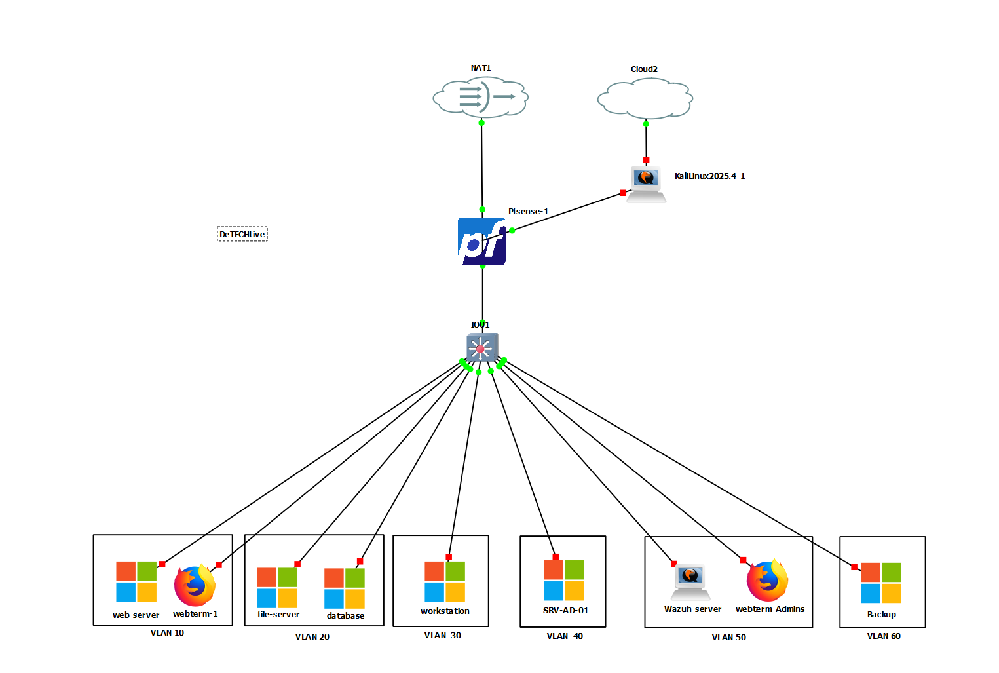
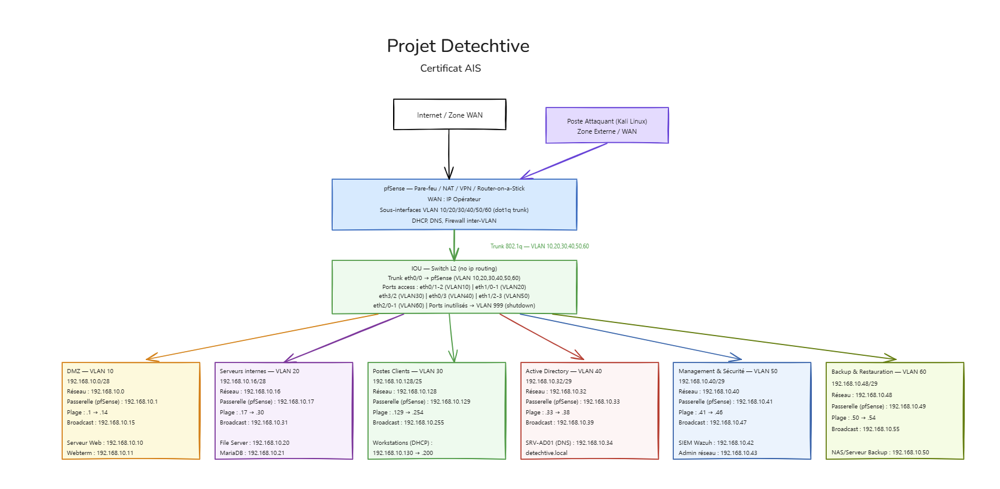

[ Cliquer pour fermer ]
Certification AIS (Niveau 6)
Scénario : Pilotage d'un projet d'infrastructure global : conception de l'architecture réseau sécurisée et intégration complète de la stack technique (Web, Data, Fichiers) dans une approche Secure by Design.
Le switch IOU opère en L2 pur (commutation uniquement, pas de routage inter-VLAN). pfSense centralise l'ensemble du routage, du filtrage et du NAT via 6 sous-interfaces 802.1Q sur son interface LAN physique. Un trunk 802.1Q unique relie le switch à pfSense — pfSense porte toutes les passerelles VLAN.
| Zone | VLAN | CIDR | Passerelle (pfSense) | IP Fixe(s) | Services | Confiance |
|---|---|---|---|---|---|---|
| DMZ | 10 |
192.168.10.0/28 |
192.168.10.1 |
.10 Web, .11 Webterm |
Serveur Web Apache/PHP, Webterm | 🔴 Faible |
| Serveurs Internes | 20 |
192.168.10.16/28 |
192.168.10.17 |
.20 FS, .21 DB |
File Server (SMB), Base de Données (MariaDB) | 🟠 Moyen |
| Postes Clients | 30 |
192.168.10.128/25 |
192.168.10.129 |
DHCP .130→.200 |
Workstations agents (Windows) | 🟡 Standard |
| Active Directory | 40 |
192.168.10.32/29 |
192.168.10.33 |
.34 SRV-AD01 |
SRV-AD-01, DNS, PKI (AD CS) | 🟣 Critique |
| Management & Sécurité | 50 |
192.168.10.40/29 |
192.168.10.41 |
.42 Wazuh, .43 Admin |
SIEM Wazuh, Administration réseau | 🟣 Critique |
| Backup & Restauration | 60 |
192.168.10.48/29 |
192.168.10.49 |
.50 NAS/Backup |
NAS/Serveur Backup (BorgBackup) | 💾 Isolé |


WAN → VLAN 10 : NAT ports 80/443 → .10
WAN → pfSense : ALLOW UDP 51820 (WireGuard)
VLAN 10 → VLAN 20 : ALLOW 3306 (DB) & 445 (SMB)
VLAN 10 → VLAN 40/50/60 : DENY ALL
VLAN 30 → VLAN 40 : ALLOW 389/636 (LDAP/S)
VLAN 30 → VLAN 20 : ALLOW 445 (SMB)
VLAN 20/40 → VLAN 60 : ALLOW backup (unidirectionnel)
VLAN 60 → Tous VLANs : DENY ALL (passif)
VLAN 60 → VLAN 50 : ALLOW 1514/1515 (logs Wazuh)
LAN internes → Internet : ALLOW sortant (loggué SIEM)
Le principe fondamental de sécurité appliqué au projet.
Isolation stricte des données sensibles.
IP fixe : 192.168.10.10. Seul point exposé à Internet via NAT.
session_start() et redirection si non authentifié.IP fixe : 192.168.10.21. Inaccessible depuis Internet.
PDO::MYSQL_ATTR_SSL_CA pour valider l'identité MariaDB.try/catch PHP pour basculer en mode dégradé si SSL échoue.IP fixe : 192.168.10.20. Stockage des preuves en zone protégée.
net use pour monter le lecteur réseau à la demande.51820 sur WAN pfSense.10.10.10.0/24 (réseau virtuel WireGuard).Le VPN est réservé aux administrateurs IT en télétravail. Il permet de gérer pfSense, l'AD, Wazuh et le serveur backup sans exposer RDP/SSH directement sur Internet.
192.168.10.48/29 — totalement isolé des autres zones.192.168.10.50 — BorgBackup ou équivalent.192.168.10.42).VLAN 20 → VLAN 60 : ALLOW backup ports (TCP 9102) — unidirectionnel
VLAN 40 → VLAN 60 : ALLOW backup ports (TCP 9102) — unidirectionnel
VLAN 60 → VLAN 50 : ALLOW 1514/1515 (logs Wazuh uniquement)
VLAN 60 → Tous autres VLANs : DENY ALL
VLAN 10/30 → VLAN 60 : DENY ALL
VLAN 60 → Internet : DENY ALL (anti-ransomware)
Pour éliminer les points de défaillance uniques (SPOF) identifiés, les évolutions suivantes sont préconisées pour le futur :
💡 Cette approche garantit que la panne d'un équipement physique n'entraîne pas l'arrêt total des services.